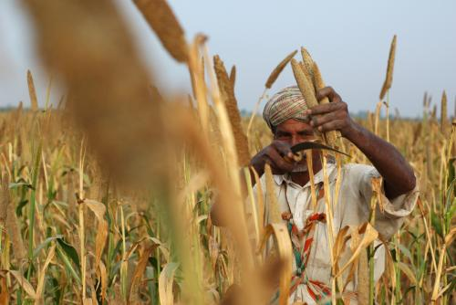
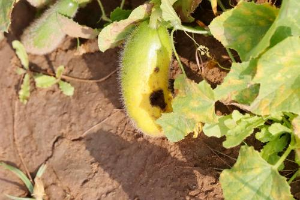
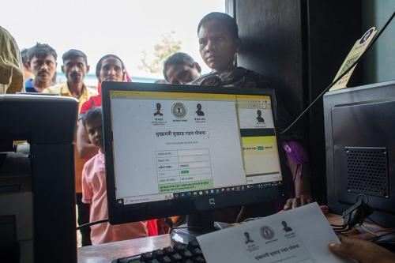
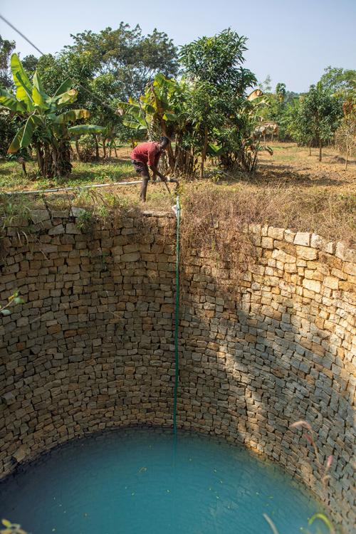

International year of millets: Centre to work on decentralised processing & marketing

The central government will work to decentralise food security by combining the traditional knowledge system of local communities on millets with the scientific knowledge of the universities, said Manoj Ahuja, secretary, Union Ministry of Agriculture and Farmers Welfare.
He was speaking at the ‘People’s Convention on Millets for Millions’, a gathering of farmers, civil society members, researchers and government officials from 28 states to deliberate upon a multi-sectoral approach to ensure that millet consumption benefitted not just consumers but rural communities.
“Food security, so far, has been very centralised, but today we need a decentralised system. Decentralised processing and marketing of millets needs to be economically viable to attract private investments, so that innovations like the ‘millet mixie’ (a machine which dehusks different varieties of millets) can be scaled up,” Ahuja said.
Read More
Wheat crisis: Additional irrigation may not save Rabi crops; here is why

Agricultural scientists have recommended additional irrigation for Rabi crops to farmers to save crops from the unprecedented heat in February. The recommendation has raised concerns about groundwater levels in areas with no irrigation facilities.
Down To Earth spoke to some farmers from Punjab and Madhya Pradesh, who are worried about the maximum temperatures spiked over the last two days. Farmers who had sown wheat in November say the grains have started forming, but the heat damage is not visible yet.
However, if the temperatures keep spiking, then crop damage is certain, said farmers.
Read More
Aphid, thrips threaten vegetable crops, pulses as February temperatures soar across north India

An unusually hot February has put the essential Rabi crop wheat at risk. Scientists have now warned the ongoing weather conditions are likely to threaten the vegetable crops and pulse yield with attacks by pests like aphids and thrips.
Warm and dry weather conditions prevailing in north and northeast India are ideal for the growth of insects, according to experts. Down To Earth, during a visit to Naugaon of Alwar in Rajasthan earlier this month, black aphids were found on safflower crops.
Roshan Lal, a farmer from the village, pointed out that black aphids have even infested his mustard plantations. “Green aphids are known in the region, but now black aphids have also infested the crops in our area,” he said.
Read More
For Rajasthan farmers, pest attacks mean loss of income, debt burden

Jeewat Meena, a farmer from Mandapur village of Naugaon Tehsil, said pest attacks had forced him to apply heavy pesticides on his crops.
“There was no fear of pests in our area about a decade ago. However, pest attacks and the damages caused by them increased over the years. It has worsened further over the past three years,” he said.
Meena said he started using pesticides to prevent the attacks. “During initial years, the pest control measures were employed once or twice a year, now it has increased to three sprays for a crop,” he said.
He added that crops like cucumber, which usually gets infested by white flies, require pesticide sprays every 15 days.
“The input cost has increased multifold. I spend around Rs 12,000 per acre for my cotton farm to protect them from pink bollworm.” This is in addition to the seeds, chemical fertiliser, mulching and other inputs needed for growing them, he added.
Read More
A monumental waste: Crores spent on water-related works haven’t readied Jharkhand for droughts; here’s why

“A few decades ago, my fields produced so much paddy and maize that I would donate it. This year, the situation is so bad that my entire family is surviving on the monthly ration the government provides under the National Food Security Act,” says Surendra Korba, who owns a 16-hectare (ha) farm in Sarhua village of Jharkhand’s Palamu district.
“The village has over 200 families, but in recent years, about 75 per cent of the youth go to cities in search of work. Water shortage has made farming difficult,” says Lokas Korba, a tribal rights activist in the village.
In the last decade, 2022 was one of the most drought-affected years for Jharkhand. According to Yearly Weather Report-2022 (Jharkhand) of the India Meteorological Department (IMD), the state received 817.6 mm of rainfall, which is 20 per cent below normal.
Read More
A monumental waste: Crores spent on water-related works haven’t readied Jharkhand for droughts; here’s why

On October 31, 2022, the State Disaster Management Department declared 22 of the state’s 24 districts, covering 122 blocks, as drought-affected. Some 3.15 million farmers have applied for relief under Chief Minister Drought Relief Scheme till February 2, 2023, says the scheme’s web portal.
Of these, 1.63 million farmers were not able to sow at all this year, while 998,714 farmers have lost more than one-third of their crop. The state has promised a one-time allowance of Rs 3,500 per family to all eligible applicants.
Jharkhand is largely agrarian, engaging about 63 per cent of the rural population, according to Census 2011. Over 92 per cent of the sown area in Jharkhand is under food crops, predominantly paddy — the state’s main kharif crop, as per “Jharkhand-Action Plan on Climate Change”. (In 2009 the Union government directed all states and Union Territories to prepare these plans consistent with the strategy outlined in the “National Action Plan on Climate Change”.)
The other crops cultivated are maize, pulses and oilseeds. Usually, 3.8 million ha is cultivated in the state, but during the 2022 kharif season, only 1.4 million ha was sown against a target of 2.83 million ha, says the drought declaration notification of October 31, 2022. This means about 50 per cent of the farmland in the state could not be cultivated.
The reason is that the agrarian economy is almost entirely dependent on rain. Ninety-two per cent of the state’s sown area is rainfed, as per the Jharkhand agriculture department and 82 per cent of the annual rainfall is received during monsoon only, shows IMD data. As a result, deficit or untimely rain has a devastating effect on the state’s agriculture.
With changing climate, the droughts have become more frequent and severe. In sharp contrast to the observed trend during 1956-2000, the period 2001-08 witnessed a sharp decline in annual rainfall, says “Jharkhand-Action Plan on Climate Change”.
This has been accompanied by severe droughts, which have become frequent after 2000. Parts of the state have been hit by drought in 14 of the past 23 years.
Read More